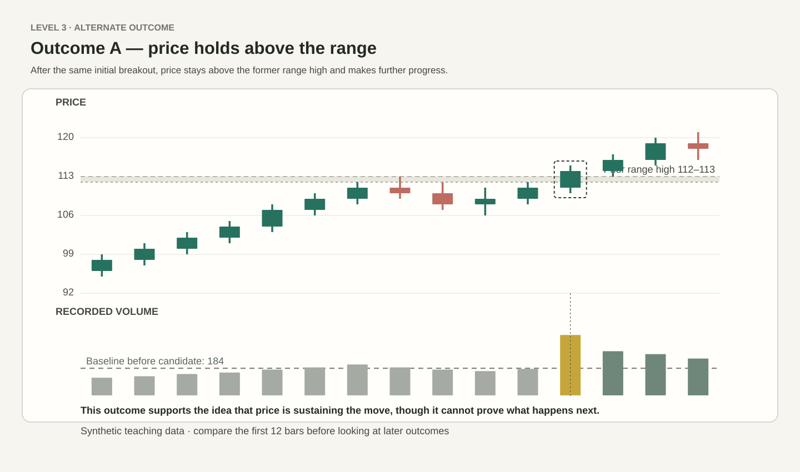
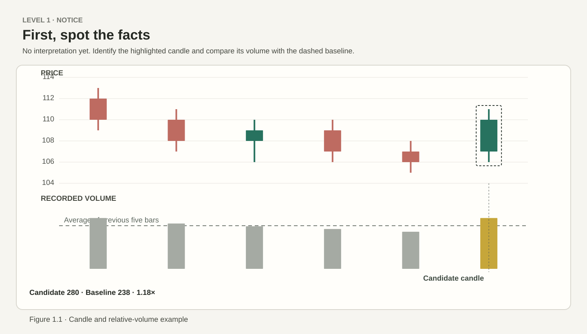
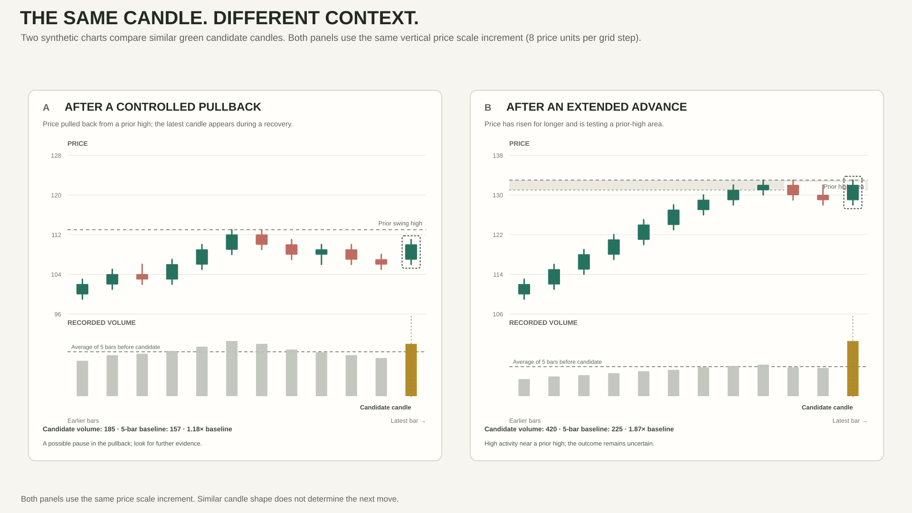
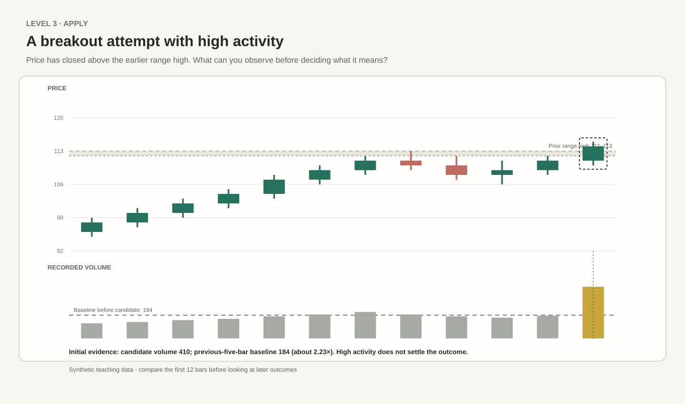
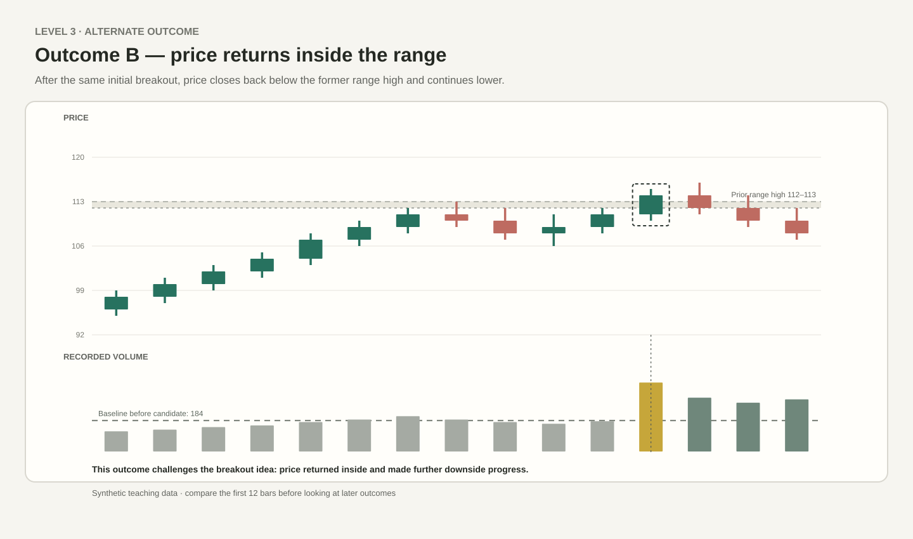

Path A — Price holds above the range

Price sustains the move above the range and makes additional upward progress. This supports the continuation possibility, but does not guarantee later gains.
Work through three levels. Start by describing what you can see, then compare two charts, and finally apply the idea to a new breakout attempt. You must record your initial reading before the later price paths appear. Use this exercise to practise evidence-based chart reading. Compare what is visible before interpreting it; it is not a trading signal.
Start with what you can point to. Do not decide what the candle predicts.

One or two careful sentences are enough. State facts before an interpretation.
The candidate candles have the same price range and body size. Both charts use the same vertical price-scale increment. Their surrounding price structure and relative activity differ.

This is a new example. Price has closed above an earlier range high and the latest volume bar is unusually large against its recent baseline. Before you see any later bars, decide what can be said now—and what remains uncertain.

Both paths begin with the same breakout event and the same high-volume candle. Compare only what price does afterward.

Price sustains the move above the range and makes additional upward progress. This supports the continuation possibility, but does not guarantee later gains.

Price returns inside the range and moves lower. This challenges the breakout idea. The original volume spike alone could not tell us which path would develop.
Your responses remain only in this page; they are not saved to an account or sent to a server. This prototype checks that a response has been written, but does not automatically grade the meaning of your analysis. Use the self-check and model reasoning below.
The final highlighted candle is green, and its recorded volume is above the average of the five previous bars. The earlier bars show a move down followed by mixed movement before the candidate candle. This is an observation, not a forecast.
Panel A shows a green candle during a recovery after a pullback. Candidate volume is 185 compared with a baseline of 157, about 1.18 times that average. Panel B shows a similar-size candle after a longer advance into a prior-high area, with volume 420 against a baseline of 225, about 1.87 times that average. Location and relative activity differ, so the questions we ask are different. Neither chart proves a reversal or identifies participants.
The new chart's candidate candle closes above the prior range-high area of 112–113. Its volume is 410 versus a previous-five-bar baseline of 184, about 2.23 times that average. That makes the event worth examining, but does not prove acceptance or continuation.
In Path A, price holds above the range high and makes further progress. In Path B, price returns below the range high and moves lower. The later price behaviour distinguishes the paths; the first high-volume candle alone could not.
If you wrote only “bullish” or “bearish,” add the visible facts behind that claim. If you described only volume, add the price result and location. If you chose a direction without a condition, name the later price behaviour that would strengthen or weaken your view.
Progression rule: each step adds a reasoning demand, not clutter or unexplained jargon. This is a learning exercise—not a trading signal. The standalone prototype does not save answers or connect to the website's member system.